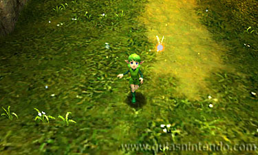
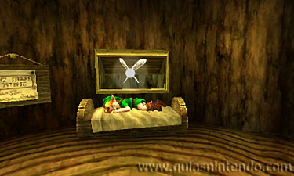
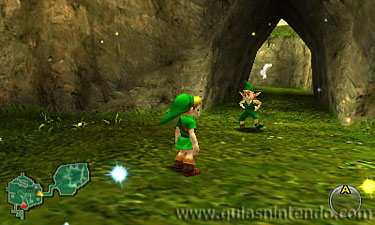
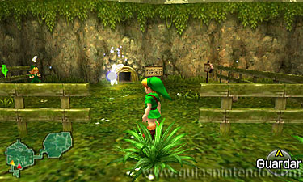
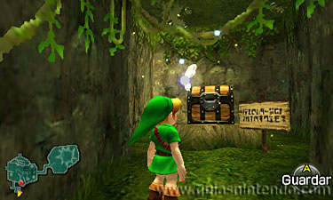
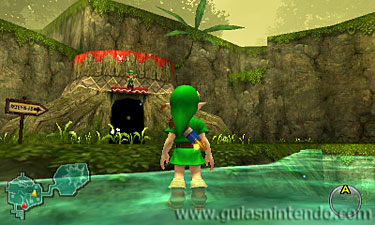
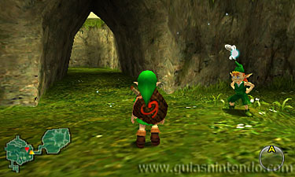
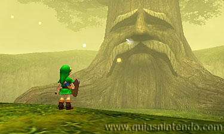

Guía The Legend of Zelda: Ocarina of Time

desarrollo
Al comenzar el juego aparecerás en el Bosque Kokiri, donde vive Link, el personaje que manejarás a lo largo de la aventura.
{kind=link}
Después de ver una secuencia de vídeo en la que se ve como alguien huye de un castillo, verás como un hada llamada Navi va a buscar a Link a su casa y le dice que el Gran Árbol Deku quiere hablar con él. Al salir de la casa, verás a una niña llamada Saria y también te dirá que tienes que ir a ver al árbol.

A continuación, baja la escalera y ve a la cueva que está en la zona este del mapa. Allí encontrarás la cueva que te lleva hasta el Gran Árbol Deku. pero en la entrada hay un chico que no te dejará pasar hasta que vayas equipado con una espada y un escudo.
Para conseguir la espada debes ir a la esquina inferior izquierda del mapa y allí verás un recinto donde hay un pequeño agujero en la pared del fondo (túnel estrecho).

Ponte frente al agujero y pulsa el botón "A" parta meterte por él. Después avanza hasta salir por el otro lado. Así llegarás a un laberinto donde circula una gran piedra rodante que te aplastará si te pones en su camino quitándote parte de vida. En el laberinto avanza por el pasillo de la izquierda y al final encontrarás un cofre que contiene la espada Kokiri.
Para equiparte con la espada, pulsa sobre el icono "Equipo" de la pantalla inferior y después selecciona la espada pinchando sobre ella.

A continuación, debes ir a la tienda kokiri para comprar el escudo deku por 40 rupias. Para conseguir rupias debes buscar en el interior de las vasijas que están dentro de las casas, romper las piedras del exterior (cogiéndolas y lanzándolas con el botón "A"), caminar entre las flores y cortar las plantas altas (si entras en una casa y vuelves a salir las plantas habrán crecido de nuevo y las rocas volverán a aparecer).

Cuando tengas la espada Kokiri y el escudo deku, vuelve a la cueva que estaba en el lado este del mapa y ahora el chico si te dejará pasar. Avanza por este camino eliminando o esquivando a los enemigos y al final encontrarás al Gran Árbol Deku (al eliminar a los enemigos dejarán unos palos deku que podrás coger). Al llegar, el Gran Árbol Deku te preguntará si le puedes ayudar y si contestas que "Sí", abrirá su boca para que puedas acceder a su interior.
